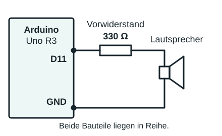

3. Ein Programm zum Programmieren
Du übersetzt einen geplanten Ablauf in Arduino-Code, überträgst ihn kontrolliert und liest anschließend Zeile für Zeile, wie daraus ein beobachtbares Verhalten entsteht.
Ab jetzt programmierst du selbst
Im ersten Modul stand die Hardware im Mittelpunkt: Pins, LED, Widerstand und Stromkreis. Jetzt kommt die zweite Hälfte dazu: Du gibst dem Arduino mit einem Programm genaue Anweisungen.
Dafür arbeitest du nicht in OneNote und nicht im Browser, sondern in einem neuen Programm: der Arduino-IDE. IDE bedeutet Entwicklungsumgebung. Das ist dein Arbeitsplatz zum Schreiben, Prüfen und Übertragen von Code.
- Du schreibst den Sketch im Texteditor der Arduino-IDE.
- Du prüfst den Sketch mit Verify, bevor du ihn hochlädst.
- Du überträgst ihn mit Upload auf das angeschlossene Board.


- setup(): wird einmal beim Start ausgeführt
- loop(): wiederholt sich ständig
- Welche Pins oder Variablen werden vorbereitet?
- Was passiert genau einmal in
setup()? - Was wiederholt sich in
loop()? - Welche Zeile verändert sichtbar die Hardware?

Zwei Bereiche, zwei Aufgaben
Markiere im Bild setup() und loop(). Ordne jede Codezeile einem der beiden Zeitpunkte zu: einmal beim Start oder fortlaufend während des Betriebs.
Prüffrage: Wo gehört eine Pin-Konfiguration hin, wo das wiederholte Schalten?
Programm übertragen
Aufgabe: IDE öffnen, Arduino anschließen und erkunden
Arbeite jetzt selbst am Computer. Öffne das Programm Arduino IDE, nicht nur diese Webseite, und lege deinen Arduino bereit.
- Verbinden: Schließe den Arduino mit einem USB-Datenkabel an den Computer an. Eine leuchtende LED zeigt die Versorgung, aber noch keine funktionierende Datenverbindung.
- Board auswählen: Öffne die Board-Auswahl oben in der IDE und wähle das tatsächlich angeschlossene Modell, bei einem Uno R3 also Arduino Uno. Du findest die Einstellungen auch unter Werkzeuge → Board.
- Port zuordnen: Wähle den Anschluss deines Boards, zum Beispiel
COM3unter Windows. Falls du unsicher bist, trenne kurz das USB-Kabel und verbinde es erneut: Der zugehörige Port verschwindet und erscheint wieder. Schaue auch unter Werkzeuge → Port; die konkrete Portnummer ist nicht bei allen gleich. - Oberfläche erkunden: Suche den Texteditor mit
setup()undloop(), den Haken für Verify/Überprüfen, den Pfeil für Upload/Hochladen und den Ausgabebereich für Meldungen unter dem Editor. Schaue dir außerdem den seriellen Monitor an; du brauchst ihn später zum Lesen von Daten. - Festhalten: Notiere in OneNote dein Board-Modell und den gewählten Port. Erkläre deinem Nachbarn, wo du Code eingibst und wo Fehlermeldungen erscheinen. Einen eigenen Sketch schreibst und überträgst du auf Seite 3.
Wird das Board als Unknown/Unbekannt angezeigt, wähle über Anderes Board und anderen Port auswählen das passende Modell selbst. Fehlt der Port ganz, prüfe das Datenkabel und die USB-Verbindung und hole dir bei Bedarf Hilfe.

Trenne Vorbereitung und Übertragung
Finde im Bild vier Kontrollpunkte: USB-Verbindung, Board, Port und Kompilierung. Erst wenn sie stimmen, ist der Upload aussagekräftig.
Diagnose: Ein Sketch ist fehlerfrei, lässt sich aber nicht hochladen. Welche zwei Einstellungen prüfst du zuerst?
4. Das erste Blinken
Aufgabe: Selber programmieren
Wechsle jetzt in die Arduino-IDE und bringe deine eigene LED zum Blinken. Das Bild und der Codeblock darunter sind deine Vorlage. Nur Lesen reicht hier nicht: Du schreibst, überträgst und testest den Sketch selbst am Board.
- Schaltung vorbereiten: Trenne zuerst die Stromversorgung. Verbinde die Leitung, die bisher an 5 V lag, mit Pin 13. LED und Vorwiderstand bleiben in Reihe; die Rückleitung bleibt an GND. Verbinde das Board anschließend wieder per USB.
- Sketch schreiben: Öffne die Arduino-IDE, lege einen neuen Sketch an und speichere
ihn als
Blink_Start. Tippe den Blink-Code aus der Vorlage ab. Im Editor darf es jeweils nur einsetup()und einloop()geben. - Prüfen und übertragen: Wähle Board und Port aus. Klicke zuerst auf Verify. Korrigiere mögliche Fehler, lade den Sketch mit Upload hoch und warte auf die Abschlussmeldung.
- Beobachten: Prüfe, ob die LED abwechselnd eine Sekunde an und eine Sekunde aus ist. Notiere deine Beobachtung und mögliche Schwierigkeiten unten bei der Reflexion.
- Selbst verändern: Sage zuerst voraus, was bei 200 ms an und 800 ms aus passieren wird. Ändere anschließend die beiden Wartezeiten im Sketch, lade ihn erneut hoch und vergleiche deine Vorhersage mit dem tatsächlichen Blinken.

Übersetze Code in Zeit
Unterstreiche die beiden Zustandswechsel und kreise die Wartezeiten ein. Zeichne danach für zwei Sekunden eine Zeitlinie mit den Zuständen HIGH und LOW.
Variation: Sage voraus, wie delay(200) und delay(800) den Rhythmus verändern.
OUTPUT,
HIGH, LOW und die beiden Wartezeiten.
void setup() {
pinMode(13, OUTPUT);
}
void loop() {
digitalWrite(13, HIGH);
delay(1000);
digitalWrite(13, LOW);
delay(1000);
}setup() bereitet vor. loop() wiederholt. Blinken entsteht nicht durch einen Spezialbefehl, sondern durch den Wechsel aus HIGH, Warten, LOW, Warten.
Häufige Fehlermeldungen verstehen
Eine Fehlermeldung ist ein Hinweis auf die Ursache. Unterscheide zuerst: Scheitert schon Verify, scheitert erst Upload oder läuft das Programm anders als erwartet? Die genaue Formulierung der Meldung kann je nach IDE, Board und Compiler abweichen.
- Lies die erste konkrete Fehlermeldung in der Ausgabe, nicht nur die letzte Zeile
exit status 1. Diese sagt nur, dass der Vorgang gescheitert ist. - Prüfe die genannte Codezeile und die Zeile davor. Dort kann die eigentliche Ursache liegen.
- Ändere eine Sache und klicke erneut auf Verify. Weitere Meldungen können Folgefehler sein.
Beispiel 1: Ein Semikolon fehlt
Bei einer Meldung wie expected ';' before ... fehlt häufig ein
Semikolon am Ende einer Anweisung. Hier entdeckt der Compiler das Problem erst bei
delay; die Ursache liegt in der Zeile davor.
Fehler im Beispiel
digitalWrite(13, HIGH)
delay(1000);Korrigiert
digitalWrite(13, HIGH);
delay(1000);Beispiel 2: Eine runde Klammer fehlt
Die Meldung expected ')' before ... kann auf eine nicht geschlossene
Argumentliste hinweisen. Prüfe beide Klammern und das Komma zwischen den Argumenten.
Fehler im Beispiel
digitalWrite(13, HIGH;Korrigiert
digitalWrite(13, HIGH);Beispiel 3: Ein Funktionsname ist falsch geschrieben
Bei 'digitalwrite' was not declared in this scope kennt der Compiler
den angegebenen Namen nicht. Im Beispiel muss das W groß sein.
Bei Variablen kann diese Meldung auch bedeuten, dass sie nicht oder nur in einem anderen Bereich angelegt wurden.
Fehler im Beispiel
digitalwrite(13, HIGH);Korrigiert
digitalWrite(13, HIGH);Beispiel 4: setup() ist nicht geschlossen
Steht loop() versehentlich innerhalb von setup(), kann
a function-definition is not allowed here erscheinen.
Hier fehlt die schließende geschweifte Klammer vor void loop().
Fehler im Beispiel
void setup() {
pinMode(13, OUTPUT);
void loop() {
digitalWrite(13, HIGH);
}Korrigiert
void setup() {
pinMode(13, OUTPUT);
}
void loop() {
digitalWrite(13, HIGH);
}Beispiel 5: Verify klappt, Upload scheitert
Zum Beispiel meldet die IDE, dass der Port nicht geöffnet werden kann, oder zeigt
einen Fehler mit avrdude. Prüfe Board-Auswahl, Port und USB-Verbindung
wie auf der Seite Programm übertragen. Ein reines Ladekabel kann keine Daten übertragen;
auch ein von einem anderen Programm belegter Port kann den Upload verhindern.
Wenn der Upload erfolgreich ist, die LED aber aus bleibt, prüfst du stattdessen Pinangabe, Schaltung, LED-Polung und Programmlogik.
Compilerfehler, Uploadfehler und ein falsches Programmverhalten haben unterschiedliche Ursachen. Du nutzt die konkrete Meldung, prüfst gezielt und testest nach jeder Korrektur erneut.
Zum Nachschlagen: Arduino-Hilfe zu Compilerfehlern und Arduino-Hilfe zu Uploadfehlern.
Aufgabe: Selber programmieren
Jetzt arbeitest du wieder selbst in der Arduino-IDE. Entwickle und teste die Blink-Sketches auf dieser Seite. Die Aufgaben 4.3–4.7 aus dem Material stehen darunter auch als Text. Code schreibst du in der IDE; Vorhersagen, Beobachtungen und Erklärungen hältst du in OneNote fest.
Speichere Varianten unter eigenen Namen, zum Beispiel Blink_Windrad und
Ampel. Prüfe jeden Sketch mit Verify, lade ihn hoch und vergleiche
das Verhalten mit deiner Vorhersage.
Programmiere zunächst den Blinkrhythmus aus 4.3. Sage bei 4.4 und 4.5 das Verhalten voraus und teste die Programme anschließend. Baue zum Schluss die Ampel aus 4.6.
4.3 Programmiere einen Windrad-Blinkrhythmus

Deine LED soll einen vorgegebenen Warnrhythmus nachbilden: 1 s an, 0,5 s aus, 1 s an, 1,5 s aus. Danach beginnt die Folge von vorn.
- Plane die Reihenfolge von HIGH, LOW und den Wartezeiten. Rechne die Sekunden in Millisekunden um.
- Schreibe den Sketch für die LED an Pin 13. Entscheide, was in setup() und was in loop() gehört.
- Übertrage den Sketch und prüfe den vollständigen Rhythmus. Notiere in OneNote, wie lange eine komplette Wiederholung dauert.
4.4 Sage die Leucht- und Ausschaltzeiten voraus
Verfolge den folgenden Sketch zuerst auf Papier. Wie lange leuchtet die LED direkt nach dem Start? Wie lange ist sie aus? Was ändert sich bei den weiteren Durchläufen von loop()? Achte auf den Übergang vom Ende zum Anfang der Schleife.
void setup() {
pinMode(13, OUTPUT);
digitalWrite(13, HIGH);
}
void loop() {
delay(400);
digitalWrite(13, LOW);
delay(200);
digitalWrite(13, HIGH);
delay(300);
}Tippe den Sketch in der IDE ein und teste deine Vorhersage am Board. Zeichne eine Zeitlinie und begründe die Zeiten in OneNote.
4.5 Vergleiche einmaliges und wiederholtes Schalten
Welches Programm lässt die LED nur einmal aufleuchten? Bei welchem wirkt sie danach fast dauerhaft eingeschaltet? Begründe vor dem Test, was nach der letzten LOW-Anweisung passiert.
Programm A
void setup() {
pinMode(13, OUTPUT);
digitalWrite(13, HIGH);
delay(500);
digitalWrite(13, LOW);
}
void loop() {
}Programm B
void setup() {
pinMode(13, OUTPUT);
}
void loop() {
digitalWrite(13, HIGH);
delay(500);
digitalWrite(13, LOW);
}Teste beide Programme nacheinander und halte in OneNote fest, warum eine LOW-Anweisung allein noch keine gut sichtbare Dunkelpause erzeugt.
4.6 Programmiere eine Ampel
Baue eine grüne, eine gelbe und eine rote LED auf. Jede LED braucht einen eigenen Vorwiderstand. Trenne die Stromversorgung vor dem Umbauen und verwende drei verschiedene Digitalpins, zum Beispiel Grün an 8, Gelb an 9 und Rot an 10.
Setze diesen wiederkehrenden Ablauf in einen eigenen Sketch um:
- Grün einschalten und länger warten.
- Grün ausschalten, Gelb einschalten und kurz warten.
- Gelb ausschalten, Rot einschalten und länger warten.
- Zusätzlich Gelb einschalten und kurz warten.
- Rot und Gelb ausschalten; wieder mit Grün beginnen.
Wähle passende Wartezeiten. Konfiguriere alle drei Pins in setup() und lege dort einen eindeutigen Startzustand fest: alle LEDs aus. Teste deinen Sketch am Board und dokumentiere Pinbelegung und Zeiten in OneNote.
4.7 Ergänze deinen Befehls-Spickzettel
Lege in OneNote eine Übersicht mit den Spalten Schreibweise, Bedeutung und Beispiel an.
Beginne mit setup(), loop(), pinMode(),
digitalWrite() und delay(). Erkläre daneben
OUTPUT, HIGH und LOW. Ergänze später neu gelernte Befehle.
void setup() { ... }void loop() { ... }pinMode(Pin, OUTPUT);digitalWrite(Pin, HIGH);digitalWrite(Pin, LOW);delay(Millisekunden);Merke: pinMode() legt die Betriebsart eines Pins fest;
der Befehl deklariert keine Variable. OUTPUT bedeutet Ausgang.
Ob bei HIGH oder LOW Strom durch ein Bauteil fließt, hängt auch von dessen Anschluss ab.
Du kannst einen beschriebenen Ablauf selbst als Sketch umsetzen, auf das Board übertragen und durch Beobachtung prüfen. Wartezeiten und die Platzierung in setup() oder loop() bestimmen, welches Verhalten entsteht.
5. Töne erzeugen - Musik verstehen
Eine schwingende Membran macht Luft hörbar

Ein Lautsprecher besitzt eine bewegliche Membran und eine Schwingspule in einem Magnetfeld. Ändert sich der Strom durch die Spule, bewegt sich die Membran und versetzt die Luft in Schwingung. Eine unveränderte Gleichspannung erzeugt keinen anhaltenden Ton: Dafür muss sich die Membran immer wieder bewegen.
Die Frequenz gibt an, wie viele Schwingungen pro Sekunde stattfinden.
Die Einheit ist Hertz (Hz). Im hörbaren Bereich gilt: Je höher die Frequenz,
desto höher klingt der Ton. tone() erzeugt dafür am Arduino ein
regelmäßig zwischen HIGH und LOW wechselndes Signal.
Klaviatur: Von der Taste zur Frequenz
Auf der Klaviatur wechseln sich Zweier- und Dreiergruppen schwarzer Tasten ab. Das C ist die weiße Taste unmittelbar links von einer Zweiergruppe. Von dort heißen die weißen Tasten C, D, E, F, G, A, H, dann wieder C. Schwarze Tasten liefern die dazwischenliegenden Halbtöne.
Jede Note hat eine Frequenz. Damit kannst du dieselbe Tonfolge programmieren, auch wenn dein Lautsprecher anders klingt als ein Klavier. Diese gerundeten Werte gehören zu einer mittleren Oktave:
| Ton | Frequenz |
|---|---|
| C | 262 Hz |
| D | 294 Hz |
| E | 330 Hz |
| F | 349 Hz |
| G | 392 Hz |
| A | 440 Hz |
| H | 494 Hz |
| C, eine Oktave höher | 523 Hz |
Verdoppelst du die Frequenz, klingt der Ton eine Oktave höher, zum Beispiel A mit 440 Hz und A mit 880 Hz. Die Tonhöhe ist nicht dasselbe wie die Lautstärke.
Lautsprecher anschließen: mit Widerstand und leisen Tönen
Die folgende Anleitung gilt für einen Arduino Uno R3 mit 5 V und einen kleinen passiven Lautsprecher mit zwei Anschlüssen, nicht für ein aktives Verstärkermodul. Eure Lautsprecher sind unterschiedlich und teils unbeschriftet. Lass die Lehrkraft das Bauteil prüfen, wenn du nicht sicher bist, was du vor dir hast. Bei anderen Boards muss auch die zulässige Pinbelastung geprüft werden.
Trenne zuerst das USB-Kabel und jede weitere Stromversorgung. Baue dann diesen Stromweg auf:

Digitalpin 11 → 330-Ω-Widerstand → Lautsprecher → GND
- Verbinde D11 mit einem Ende eines 330-Ω-Widerstands (mindestens 0,25 W). Die Einbaurichtung des Widerstands ist egal.
- Verbinde das andere Widerstandsende mit einem Lautsprecheranschluss, bei vorhandener Kennzeichnung mit +.
- Verbinde den zweiten Lautsprecheranschluss mit GND am Arduino. Beide Bauteile liegen in Reihe, der Widerstand darf nicht überbrückt sein.
- Lass den Aufbau kontrollieren. Verbinde erst danach wieder USB und teste kurz. Halte den Lautsprecher nicht ans Ohr.
Der Widerstand bleibt immer in der Schaltung: Er begrenzt den Strom und hält den Ton leiser, damit nicht die ganze Klasse mithört. Bei 5 V begrenzen 330 Ω den Strom rechnerisch auf höchstens etwa 15 mA, noch ohne den Lautsprecherwiderstand zu berücksichtigen. Für einen noch leiseren Versuch kannst du 1 kΩ statt 330 Ω verwenden. Schließe einen unbekannten Lautsprecher nicht ohne Vorwiderstand direkt an den Pin an.
Aufgabe: Selber programmieren – ein Ton, dann Ruhe
Lege in der Arduino-IDE den Sketch Ton_Test an. Tippe den Code ab,
prüfe Board und Port und übertrage ihn nach erfolgreichem Verify.
void setup() {
}
void loop() {
tone(11, 440);
delay(1000);
noTone(11);
delay(3000);
}tone(11, 440) erzeugt am Pin 11 einen Ton mit 440 Hz und richtet den Pin
selbst als Ausgang ein. Während delay(1000) wartet der Programmablauf eine
Sekunde; der Ton läuft dabei weiter. Erst noTone(11) beendet ihn.
Danach wartet das Programm drei Sekunden in Ruhe, bevor loop() neu beginnt.
Optional kannst du die Dauer direkt angeben: tone(11, 440, 1000) bedeutet
Pin 11, Frequenz 440 Hz, Tondauer 1000 ms. Der Aufruf selbst wartet nicht so lange;
die nächste Codezeile wird direkt bearbeitet.
Vergleiche: Ändere nur 440 zu 880, lade erneut hoch und höre kurz hin. Notiere in OneNote, was sich an Tonhöhe, Tondauer und Pause ändert.
tone(11, 262);delay(500);noTone(11);5.1 Aufgabe: Selber programmieren – deine Melodie
Nutze die gerade aufgebaute Schaltung mit Vorwiderstand. Programmiere eine eigene
kleine Melodie mit mindestens vier Tönen. Wenn dir keine einfällt, nimm
„Alle meine Entchen“ aus dem Notenbeispiel. Speichere den Sketch als Meine_Melodie.
- Wähle Frequenzen aus der Tabelle und lege fest, wie lange jeder Ton klingen soll.
- Schreibe für jeden Ton
tone(11, Frequenz);und danachdelay(Dauer);. Ein neuertone()-Aufruf am selben Pin ändert die Tonhöhe. Zwischen direkt aufeinanderfolgenden Tönen istnoTone()nicht nötig. - Für eine echte Pause schreibst du
noTone(11);und danndelay(Pausendauer);. Beende die Melodie mit einer solchen Pause. - Prüfe und übertrage deinen Sketch. Vergleiche die gehörte Folge mit deinem Plan und halte Frequenzen, Dauern und eine Verbesserung in OneNote fest. Teste nur kurz und leise.
Die Frequenz bestimmt die Tonhöhe, Wartezeiten und noTone() strukturieren Töne und Pausen. Ergänze tone(Pin, Frequenz), die optionale Dauer und noTone(Pin) mit je einem Beispiel auf deinem Befehls-Spickzettel in OneNote. Der Vorwiderstand bleibt beim Testen eingebaut.
6. Unterprogramme (Funktionen)
Kommt in deiner Melodie derselbe Teil mehrfach vor? Statt die Befehle immer wieder zu
kopieren, gibst du diesem Teil einen Namen, zum Beispiel refrain().
Ein solches Unterprogramm heißt auch Funktion. Du definierst es einmal
und rufst es überall dort auf, wo du diesen Ablauf brauchst.
5.2 Aufgabe: Selber programmieren – ein Refrain als Funktion

In einem Lied kehrt der Refrain wieder. In deinem Sketch funktioniert das genauso:
refrain(); ist ein Aufruf. Der Arduino führt die Anweisungen
dieser Funktion aus und arbeitet dann an der nächsten Zeile nach dem Aufruf weiter.
void refrain() { ... } ist die Definition: Hier stehen die
eigentlichen Befehle. Sie steht außerhalb von setup() und loop(),
nicht in deren geschweiften Klammern. void bedeutet hier,
dass die Funktion keinen Wert zurückgibt.
Ein sprechender Name zeigt, wofür der Codeabschnitt da ist. Willst du den Refrain ändern, bearbeitest du nur die Definition, statt jede kopierte Stelle einzeln zu ändern.
Dieses vollständige Beispiel spielt einen kurzen Zweiton-Refrain zweimal. Die Lautsprecher-Schaltung von Seite 6 mit Vorwiderstand bleibt bestehen.
void setup() {
}
void loop() {
refrain();
delay(500);
refrain();
delay(1000);
}
void refrain() {
tone(11, 220);
delay(300);
noTone(11);
delay(100);
tone(11, 262);
delay(300);
noTone(11);
}- Öffne deinen Melodie-Sketch aus 5.1 und speichere eine Kopie als
Melodie_Funktionen. Suche einen Teil, der sich wiederholen soll. - Verschiebe seine Befehle in eine eigene Funktion
void refrain() { ... }. Ersetze die wiederholten Stellen inloop()durchrefrain();. Das Beispiel oben zeigt dir das Prinzip; die Punkte aus dem Material tippst du nicht ab. - Prüfe und übertrage den Sketch. Ändere danach eine Note in der Definition und teste, ob die Änderung bei jedem Aufruf hörbar ist.
- Vergleiche kopierten Code mit deiner Funktionslösung: Wie viele Anweisungszeilen sparst du? Zähle jeden Befehl mit Semikolon als eine Zeile, aber keine Funktionsköpfe und Klammern. Notiere Rechnung und Beobachtung in OneNote.
Ergänze auf deinem Spickzettel den Unterschied zwischen Definition und Aufruf.
5.3 Aufgabe: Lautsprecher mit Transistor – Bauteile vergleichen
Der Arduino-Pin ist kein Lautsprecherverstärker. Ein Transistor kann als elektronischer Schalter arbeiten: Der Pin liefert das Steuersignal, während der Lautsprecherstrom aus einem eigenen Lastzweig kommt. Hier verwenden wir denselben Uno R3 und dessen 5-V-Anschluss, keine zusätzliche Spannungsquelle.
Für diese Schaltung brauchst du einen geeigneten NPN-Bipolartransistor. Seine Basis (B) ist der Steuereingang; der geschaltete Laststrom fließt hier vom Kollektor (C) zum Emitter (E) und weiter zu GND. Ein kleiner Basisstrom steuert also den Strom im Lautsprecherzweig.
Erst bestimmen, dann ausprobieren: Lies die Typbezeichnung und ermittle B, C und E im Datenblatt des jeweiligen Herstellers. Die Reihenfolge der Beinchen ist nicht bei allen Transistoren gleich. Selbst eine ähnliche Bauform oder der Name BD437 reicht nicht aus, um die gezeigte Belegung ungeprüft zu übernehmen. Lass dir bei unbekannten oder unleserlich beschrifteten Teilen von der Lehrkraft helfen. PNP-Transistoren und MOSFETs sind in dieser Anleitung kein direkter Ersatz.
So schließt du die NPN-Schaltstufe an
Trenne vor dem Umbau die gesamte Stromversorgung. Entferne die direkte Verbindung von D11 zum Lautsprecher. Behalte den Serienwiderstand zum Leisehalten bei.
Steuerzweig: D11 → 1-kΩ-Basiswiderstand → B
Lastzweig: 5 V → 330-Ω-Serienwiderstand → Lautsprecher → C → E → GND
- Verbinde den Emitter E mit GND am Arduino.
- Verbinde D11 über einen 1-kΩ-Widerstand mit der Basis B. Schließe die Basis nicht direkt an den Pin an.
- Verbinde den 5-V-Anschluss über 330 Ω mit dem ersten Lautsprecheranschluss (bei Kennzeichnung mit +). Verbinde den anderen Lautsprecheranschluss mit C. Beide Widerstände dürfen mindestens 0,25 W vertragen.
- Bei einem Lautsprecher mit Schwingspule ergänzt du eine Schutzdiode parallel zum Lautsprecher, zum Beispiel eine von der Lehrkraft bereitgestellte 1N400x: Kathode mit Ring an dessen oberen Anschluss hinter dem Serienwiderstand, Anode ohne Ring an dessen unteren Anschluss bei C. Sie begrenzt Spannungsspitzen beim Abschalten; bei normal eingeschaltetem Lastzweig sperrt sie.
- Lass Typ, Pinbelegung, Widerstände und Diodenrichtung kontrollieren. Verbinde dann USB. Arduino und Schaltstufe haben über E denselben GND-Bezug.
Nicht Vin verwenden: Vin ist nicht dasselbe wie der geregelte 5-V-Anschluss. Der Lastzweig bleibt mit 330 Ω bei 5 V auf höchstens etwa 15 mA begrenzt. In diesem leisen Versuch geht es um das Schaltprinzip, nicht um möglichst viel Lautstärke. Eine höhere Lautstärke ist gegenüber Seite 6 nicht garantiert.
Vergleichsversuch mit euren verschiedenen Transistoren
- Wähle mit der Lehrkraft zwei passende NPN-Typen aus. Notiere für jeden Typ die Herstellerbezeichnung und die ermittelte Zuordnung der Beinchen zu B, C und E.
- Teste den Sketch
Ton_Testvon Seite 6 kurz bei 440 Hz. Halte Lautsprecher, beide Widerstände, Spannung und Programm unverändert. - Trenne USB und jede weitere Versorgung, bevor du den Transistor tauschst. Passe die Steckverbindungen an die tatsächliche Anschlussbelegung an. Probiere keine unbekannten Belegungen unter Spannung durch.
- Vergleiche Ton, hörbare Lautstärke und Funktion. Wird ein Bauteil warm, trenne sofort die Versorgung und lass den Aufbau prüfen. Notiere auch, wenn du keinen Unterschied hörst; erfinde kein eindeutiges Ergebnis.
Halte deine Ergebnisse in OneNote fest: Typ · B/C/E-Belegung · Beobachtung · Erklärung. Begründe, welcher Strom vom Signalpin kommt und welcher über den 5-V-Lastzweig fließt. Ob der Ton lauter wird, hängt vom Lautsprecher, dem Widerstand und dem Transistor ab.
Eine Funktion ist ein benannter Codeabschnitt, den du gezielt aufrufst. Die Definition steht außerhalb von setup() und loop(). Ein Transistor trennt Steuer- und Lastzweig; passende Widerstände und die richtige Pinbelegung gehören zum Aufbau.
Multiple Choice und Abgabe
Teste nun dein Wissen
Zum Schluss gibst du deinen Namen links unten ein und klickst auf Ergebnisse & Abschluss. Deine Antworten werden an deine Lehrerin übertragen. Zusätzlich erhältst du eine PDF-Übersicht deiner Ergebnisse; deine Sketches bleiben in der Arduino-IDE gespeichert.
Quellen & Weiterforschen
- Arduino: Board und Port in der IDE auswählen
- Arduino Reference: setup()
- Arduino Reference: loop()
- Arduino Reference: digitalWrite()
- Arduino Reference: pinMode()
- Arduino Reference: tone()
- Arduino Reference: noTone()
- Arduino Uno R3: Pinbelegung und maximale Pinbelastung (20 mA)
- Arduino: NPN-Schaltstufe, Basiswiderstand und Schutzdiode bei einer induktiven Last
- ST: BD437-Datenblatt – Anschlüsse immer beim tatsächlichen Hersteller nachschlagen
- onsemi: BD437-Datenblatt zum Vergleich der Anschlussbelegung
- Arduino: Compilerfehler verstehen
- Arduino: Uploadfehler beheben